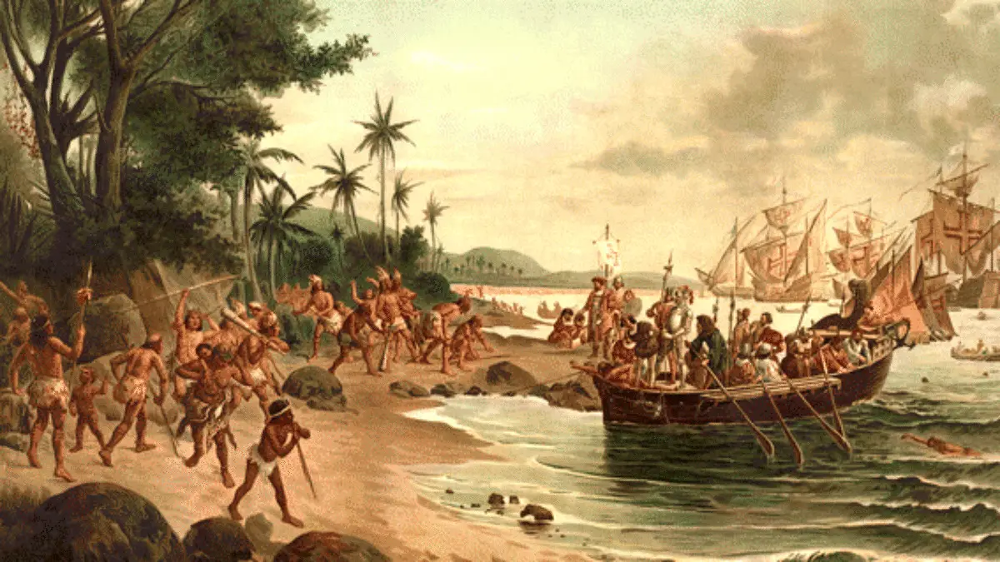

Primeiro contato entre Portugueses e Indígenas
O Descobrimento do Brasil é um marco na história mundial que marca o início da era de exploração e colonização das Américas pelos europeus. No final do século XV, a Europa estava imersa em uma era de exploração marítima. As potências marítimas da época, como Portugal e Espanha, buscavam rotas alternativas para as riquezas do Oriente, principalmente as especiarias, que eram altamente valorizadas na Europa.
Em 1500, o rei de Portugal, Dom Manuel I, comissionou uma grande expedição liderada por Pedro Álvares Cabral. O objetivo oficial da missão era chegar às Índias contornando a África pelo sul, seguindo os passos de Vasco da Gama. No entanto, durante a viagem, Cabral desviou-se da rota planejada e em 22 de abril de 1500 avistou pela primeira vez o litoral do que viria a ser o Brasil.
O local onde desembarcaram é disputado por historiadores, mas acredita-se que tenha sido Porto Seguro, na atual Bahia. Cabral e sua tripulação ficaram impressionados com a exuberância da nova terra, suas vastas florestas, rios caudalosos e povos indígenas que lá habitavam.
Após o descobrimento, Cabral reivindicou a nova terra para Portugal, hasteando a bandeira real e realizando uma cerimônia formal de posse. No entanto, o interesse inicial de Portugal pelo Brasil foi limitado, e o processo de colonização só ganharia impulso algumas décadas mais tarde, com a exploração do pau-brasil e o estabelecimento de feitorias ao longo da costa.
O Descobrimento do Brasil teve um impacto profundo na história mundial. O contato entre os europeus e os povos indígenas resultou em uma troca cultural significativa, mas também em conflitos e deslocamentos forçados. A colonização portuguesa moldou a sociedade brasileira, deixando um legado duradouro na língua, na religião, na culinária e nas tradições do país.
Este evento é celebrado como um marco na história nacional, sendo comemorado anualmente em 22 de abril. No entanto, também é alvo de críticas e controvérsias, especialmente em relação aos impactos negativos da colonização, como a exploração dos povos indígenas e o tráfico transatlântico de escravos africanos.
Aprofunde no mundo da matemática e de suas operações e aprenda truques que podem ser uteis na hora da prova.
O que é educação? O que é cultura? Qual é a relação entre educação e cultura? Como a filosofia pensa a educação e a cultura? Veja esta aula e entenda!
Ad